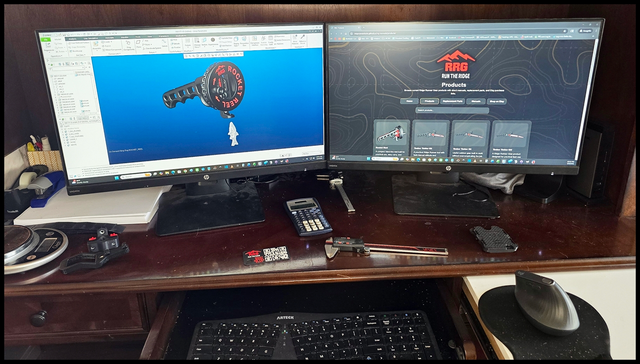
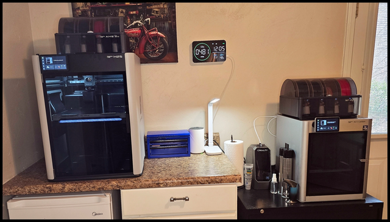
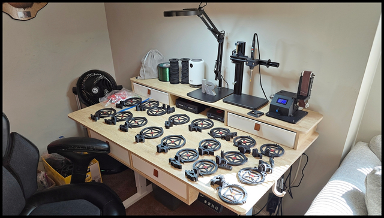
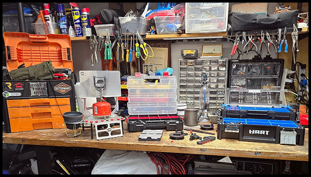
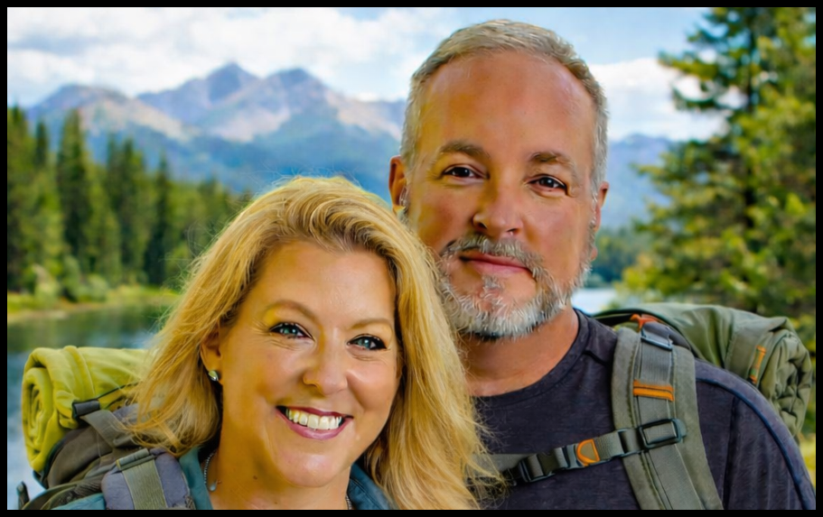

Engineering & Design
Every Ridge Runner product begins as a detailed engineering model in Creo. Design comes first, so every part has a purpose before it ever reaches the trail.
Built in the Appalachians for those who believe the outdoors should feel wild, capable, and just a little more comfortable.
Ridge Runner Gear began in the mountains of Blue Ridge, Georgia, at the southern edge of the Appalachian range.
Around there, locals joke that mountain people are “ridge runners” with one leg longer than the other from walking hillsides their whole lives. Growing up in those mountains builds a deep appreciation for the outdoors and for the gear you rely on when you’re far from the trailhead.
After retiring from a career as a mechanical design engineer, I began spending more time doing something I’ve always loved: luxury base-camp backpacking.
I enjoy the wilderness, but I also appreciate a few creature comforts while roughing it. On many trips with friends, we kept saying the same thing:
“Wouldn’t it be nice if…”
Wouldn’t it be nice if one piece of gear could do two jobs?
Wouldn’t it be nice if we could carry less but still have everything we need?
That idea became Ridge Runner Gear.
Design rugged outdoor tools that do more, weigh less, and last longer.
Ridge Runner Gear is a small workshop brand built around real use, real engineering, and real field experience. Every product starts as an idea, becomes a detailed CAD model, moves through prototyping and production, and is assembled by hand in small batches.

Every Ridge Runner product begins as a detailed engineering model in Creo. Design comes first, so every part has a purpose before it ever reaches the trail.

Precision parts are produced using advanced 3D printing technology that allows rapid testing, refinement, and dependable small-batch production.

Components are assembled, inspected, and finished by hand. That keeps quality high and ensures each piece is ready for practical field use.

This is where gear gets assembled, tested, adjusted, and improved. Sometimes future products even sneak onto the bench before they officially launch.
We believe outdoor gear should earn its place in your pack. If it doesn’t make a trip lighter, simpler, more capable, or more enjoyable, it doesn’t belong in the Ridge Runner Gear lineup.
Our products are designed with a strong focus on multi-use function, repairability, and long-term value. We want gear that works hard, lasts a long time, and can be refurbished whenever possible instead of simply thrown away.
Whenever possible, we use American-sourced materials and components. Materials are selected specifically for outdoor durability and real-world performance:
Ridge Runner Gear is still a very small company — right now it’s just me and my wife, Tara. And that’s intentional. It means every design comes from real time spent outdoors, and every piece of gear gets looked over by the same people whose name is on it. I was raised believing a good name is worth more than gold, and we’re not about to put ours on anything that doesn’t deserve it.
At Ridge Runner Gear, we believe you shouldn’t have to choose between comfort and capability.
We build gear for people who want practical tools, thoughtful design, and trail-ready durability without carrying more than they need. Some folks call it roughing it. We just think it ought to work better.
Luxury in the outdoors isn’t about excess. It’s about well-designed gear that makes camp life easier, more efficient, and more enjoyable.
We are a faith-based company, guided by Christian values in how we design gear, serve customers, and do business.
We believe the outdoors is one of God’s greatest gifts, and we’re passionate about helping others enjoy it responsibly and respectfully. That’s why we practice Leave No Trace principles and strive to be good stewards of the wild places we love.
Proudly American Made, Ridge Runner Gear is built with rugged durability and refined utility for people who actually use their gear.
We’re not trying to build more stuff just to build more stuff. We’re trying to build better tools for the trail, the campsite, and the kind of trips that leave a story behind.
Ridge Runner Gear didn’t start as a business plan. It started as ideas around a campfire and out on the trail — moments when someone said, “Wouldn’t it be nice if…”
Every product you see here was designed to solve a real problem in the outdoors. If it doesn’t make a trip easier, lighter, or more enjoyable, it doesn’t make the cut.
Thank you for supporting our dream and being part of the Ridge Runner journey.
— Tony
Founder, Ridge Runner Gear

Founders, Ridge Runner Gear
Ridge Runner Gear is still a small company by design. Every product is designed, tested, assembled, and inspected by the same people whose name is on it. Tony was raised believing a good name is worth more than gold — and that belief still guides everything we make.
Built in the Appalachians. Tested on the ridge.